Part 1. Mirror and Glass Materials
Show a sequence of six images of scene `CBspheres.dae` rendered with `max_ray_depth` set to 0, 1, 2, 3, 4, 5, and 100. The other settings should be at least 64 samples per pixel and 4 samples per light. Make sure to include all screenshots.
|
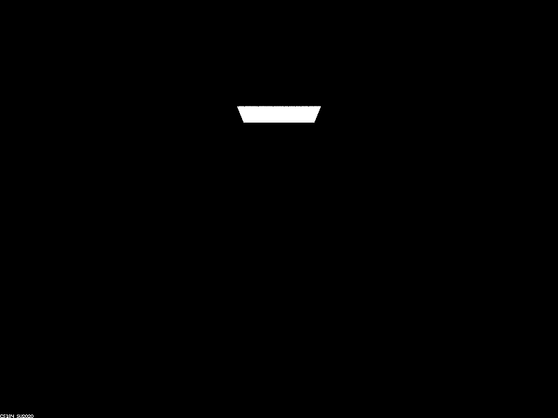
|
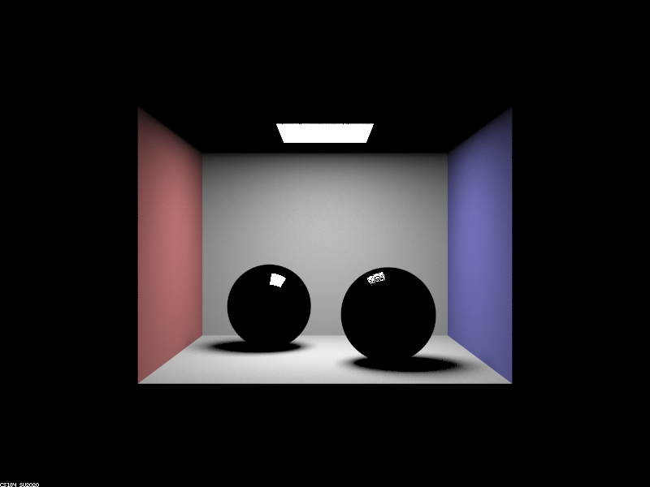
|

|
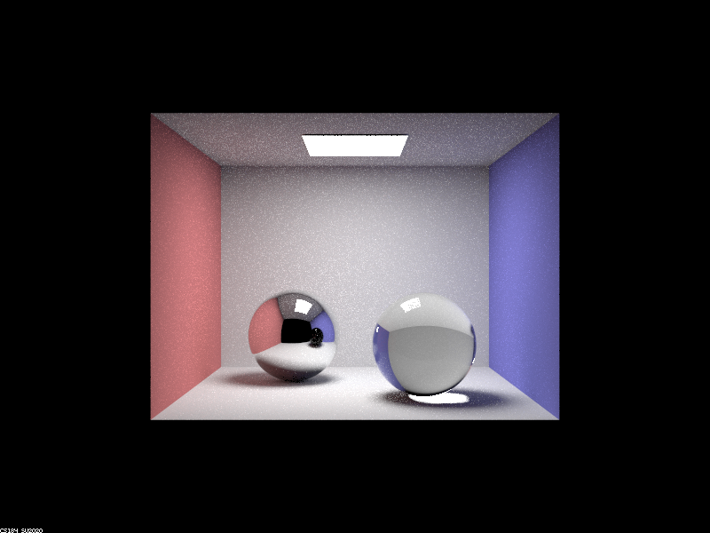
|
|
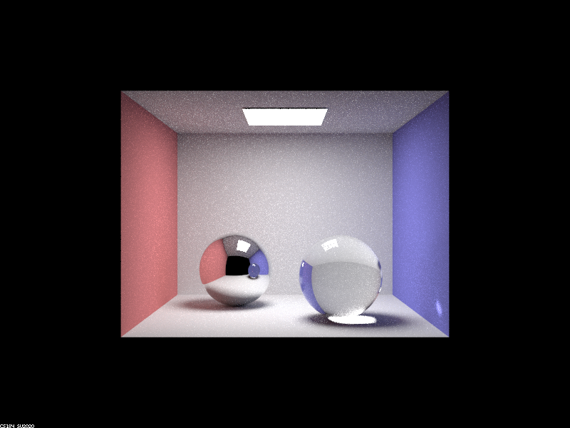
|
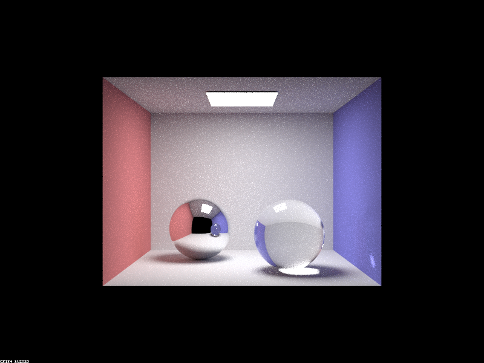
|
|
|
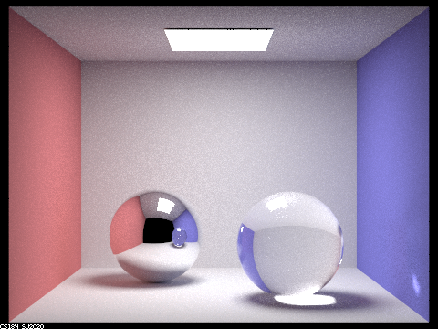
|
Point out the new multibounce effects that appear in each image. Explain how these bounce numbers relate to the particular effects that appear. Make sure to include all screenshots.
Depth 0:
At depth 0, the rays do not traverse the scene at all. Hence, the only portion of the scene that emits light is the light source of the Cornell box. All other portions of the scene are black which is the expected behavior and the rays are not allowed to traverse at all before being captured by the camera rays.
Depth 1:
The scene is now lit with the same illumination as calling one_bounce_radiance (rays are allowed to traverse 1 bounce before being captured by the camera rays). In this image, the spheres in the Cornell box are all black aside from the reflection of the light source. On the fully reflective sphere, the reflection is clear whereas, on the glass sphere, there is some noise. This is due to the fact that the chance of the light being reflected is dependent on a call to the coin toss function with probability proportional to Schlick's Reflection Coefficient (R_theta) of reflecting and 1-R_theta of refracting.
Depth 2:
The scene is now lit and the fully reflective sphere now expresses the expected reflective behavior. This is because the light from the colored panels of the wall is not able to traverse the scene and hit the sphere before being captured by the camera rays. One valid path is Area Light -> Colored wall -> Fully Reflective Sphere. Likewise, we can see some of the reflections on the glass sphere. Still, it remains primarily black as most of the refracted rays have not traversed through the glass sphere fully to be seen by the camera (therefore the defaulted value is black corresponding to the color vector (0,0,0)). The only refracted rays that are present can be seen at the bottom of the sphere in the form of a white highlight. This is caused by rays that traverse the path: Light Source -> Top of Glass Sphere -> Bottom of Glass Sphere.
Depth 3:
The glass sphere is now expressing the fully refractive behavior. The sphere is now no longer black as now the rays are able to traverse the glass sphere fully. One valid path is as follows: Light Source -> Blue Colored Wall -> Right side of Glass Sphere (entering) -> Left side of Glass Sphere (exiting). Furthermore, we can see the light passing through the sphere in this image as shown by the bright circle at the base of the glass sphere. This effect can be seen via refraction since going from one medium to another is considered once bounce. Interestingly, on the surface of the full reflective sphere, the reflection of the glass sphere appears to be the reflection of the globe at m=2. This is due to the limited ray depth limiting the possible light passing through the glass sphere. In the projected glass sphere on the fully reflective sphere, the light passing from the path Light Source -> blue wall -> right side of glass sphere -> left side of glass sphere cannot reach the fully reflective sphere in 3 bounces. Hence, We don’t see the blue light that passes through the glass sphere in the reflection cast on the reflective sphere.
Depth 4:
The scene is more illuminated than when the maximum ray depth is 3. In this scene, one of the main differences lies in the blue wall where there is now an illuminated region in the lower right corner. The reasoning for this is that the light from the area light that reflects off the fully reflective sphere refracts through the glass sphere and reaches the blue wall on the fourth bounce (Light source -> top of fully reflective sphere -> left side of glass sphere -> right side of glass sphere -> blue colored wall). This causes the light anomaly that is seen on the wall. In addition, the light passing through the glass sphere is now shown in the reflection on the fully reflective sphere. This is because the light from the following path Light Source -> blue wall -> right side of glass sphere -> left side of glass sphere -> fully reflective sphere is finally able to reach this point since there are now four bounces. Likewise, the increased number of bounces allows for the light to reflect off the floor of the scene and illuminate the bottom of the glass sphere, creating the highlight present.
Depth 5:
The scene looks as though the lighting has mostly converged. There is no major difference between depth 4 and depth 5 scenes aside from an overall brighter scenery due to the additive illumination caused from more light bounces.
Depth 100:
This scene looks very similar to Depth 5. The scene is more bright and expresses more color bleeding from the colored wall panels onto the ceiling and floor of the scene. This is due to the additive illumination of the light rays as they bounce around the scene.
Part 2. Microfacet Material
Show a screenshot sequence of 4 images of scene `CBdragon_microfacet_au.dae` rendered with $\alpha$ set to 0.005, 0.05, 0.25 and 0.5. The other settings should be at least 128 samples per pixel and 1 samples per light. The number of bounces should be at least 5. Describe the differences between different images. Note that, to change the $\alpha$, just open the .dae file and search for `microfacet`.
|
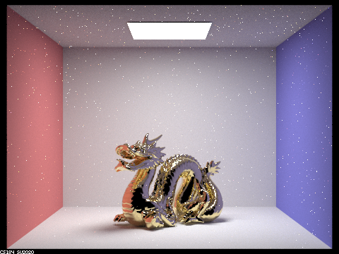
|
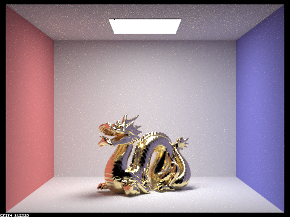
|
|
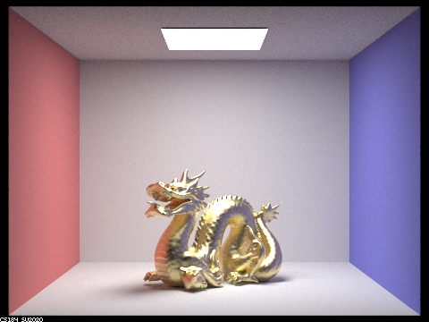
|
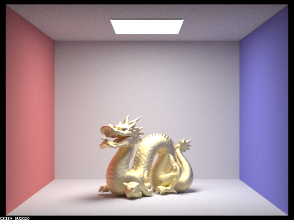
|
Parameters: -s 256 -l 4 -m 7.
As shown above, increasing α (roughness) produces images with less glossiness, as the surface
materials becomes rougher. This also means that there will be less white spots in the image.
Show two images of scene `CBbunny_microfacet_cu.dae` rendered using cosine hemisphere sampling (default) and your importance sampling. The sampling rate should be fixed at 64 samples per pixel and 1 samples per light. The number of bounces should be at least 5. Briefly discuss their difference.
|
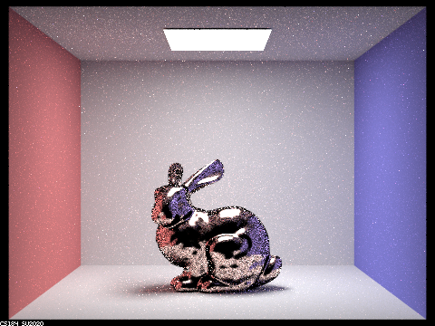
|
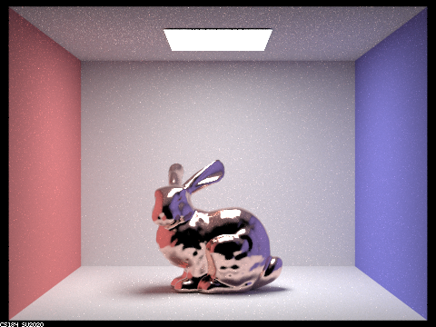
|
Parameters: -s 256 -l 4 -m 7.
As shown above, a lot more noise if present in the image using cosine hemisphere sampling.
This is because cosine hemisphere sampling does not take into account the actual distribution of the
incoming radiance or the BRDF of the surface. This means that it may sample directions with low contribution
to the final result more often, wasting computation on less significant samples. Due to the inefficient
sampling, cosine hemisphere sampling can result in more noise in the rendered image. This is because it
requires a higher number of samples to converge to a similar quality result compared to importance sampling,
which better targets areas of high contribution.
Show at least one image with some other conductor material, replacing `eta` and `k`. Note that you should look up values for real data rather than modifying them arbitrarily. Tell us what kind of material your parameters correspond to.
Parameters: -s 256 -l 4 -m 7.
We obtained relevant data from the refractive info website.
Specifically, we looked up data for Titanium. We calculated η and k using the wavelengths 614 nm (red),
549 nm (green) and 466 nm (blue). When rendering, we set the alpha value to 0.5 and 0.005.
- η: 0.26640 0.25400 0.23075
- k: 3.7080 3.4300 3.0850
|
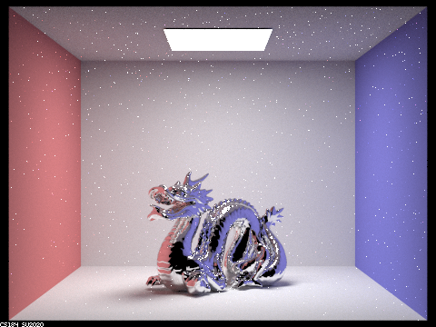
|
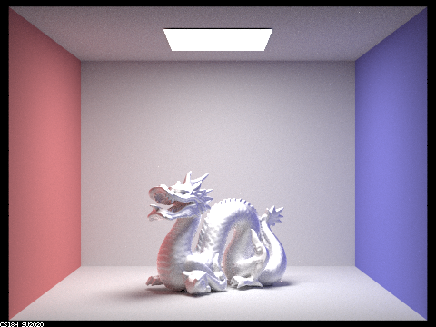
|